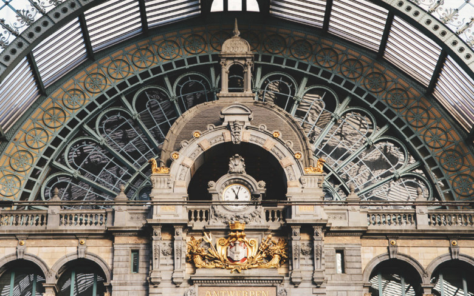
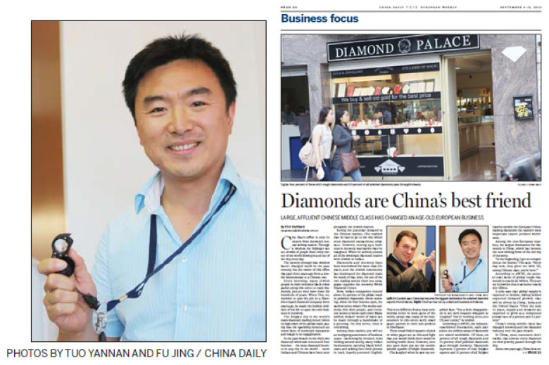

Limei Diamond is a retail brand under LUMIA Diamonds, Belgium. The company is located in Antwerp, the world-famous diamond capital. Belgem is the only Chinese company registered in Antwerp's four major diamond exchanges, founded in 2011 by Beijinger Chu Xiao.
World Diamond Capital - Antwerp, Belgium
Antwerp City is located on the banks of the Scheldt River, which leads directly to the North Sea. It is a key city in the Dutch-speaking district of Belgium. Since the beginning of the 19th century, Napoleon ordered the establishment of a port here, and now it has become the second largest port in Europe and the most important commercial center in Belgium.
The world-famous "Diamond Street" is located next to Antwerp Central Station, and 4 of the 27 diamond exchanges in the world are located in it. It is the world's largest diamond trading center. Of the 130 million carats of diamonds mined worldwide each year, 84% of the rough stones and nearly half of the finished diamonds will flow through here.
There are about 1,800 diamond companies in Antwerp . Belmem Diamond Company, which belongs to Limei, is the only diamond company founded by the Chinese among the members of the Antwerp Diamond Exchange.
Why buy diamonds from Diamond Exchange member companies? The Antwerp Diamond Exchange adopts a membership system. From the initial application to join the Diamond Exchange to the annual continuous audit, the Diamond Exchange has made extremely high requirements for the transaction credibility and quality of each member. Delisting. In the diamond industry, it is precisely because the relevant professional knowledge is complex and the amount involved is extremely high that the extremely strict rules and regulations will be established within the diamond exchange to ensure transaction security.
As the source of 80-90% diamonds in the world, the Antwerp Diamond Exchange is your ideal platform for buying diamonds, and Limei Diamond as a Chinese diamond purchase channel will provide you with the most professional services.
CHINESE IN ANTWERP
With the substantial growth of China's domestic middle class, China has become Belgium 's largest destination for Antwerp diamond exports.
In September 2013, as the only company founded by the Chinese in the Antwerp Diamond Exchange, Lu Xiao, the founder of Lumia, was interviewed by reporter Yannan Nan in the English version of China Daily.
“The world ’s rough diamonds are worth about US $ 9 billion each year, and the jewelry they make is worth US $ 50 billion. According to the AWDC report of the World Diamond Center in Antwerp, although the global jewelry market has been declining in recent years due to the economic downturn, China will Become a new market driver.
China's rising middle class has become the main force of diamond consumption. Around 2011, China has become the largest destination for Belgian diamond exports. Between 2007 and 2012, China's diamond imports from Antwerp increased by 73%.
It is predicted that with China doubling the size of the middle class, China will occupy about 30% of the global diamond market by 2023. "
"The view from this window has not changed in the past century. But the office in the Antwerp Diamond Exchange has changed from Jewish to Chinese three years ago.
Every morning, many Jews in traditional black robes and black top hats gather on this street to trade diamonds, which has been the case for centuries. When Chu Xiao resigned from a diamond company in Shenzhen three years ago, he made one of the most daring decisions of his life – coming to Antwerp ’s Diamond Street alone.
This Belgian port city by the sea is the world's largest diamond trading center. Since it accounts for about 80% of the world's diamond trading volume, it is no exaggeration to say that this shiny stone has become the representative and symbol of the entire city. Of the 27 diamond exchanges in the world, four are located in this small city, making it the city with the most diamond exchanges in the world.
Although diamond trading has been carried out in this city for more than 500 years and was once controlled by the Jews, there is even a Jewish chapel on the street of the diamond trading center, but in the past ten years, two diamond streets and four in Antwerp There are more and more Indian and Chinese faces in the diamond exchange.
China has become the second largest diamond market in the world, second only to the United States. However, in the Chinese market, the main source of diamond wholesale is mainly foreign dealers. Under the tremendous market potential and controlled source conditions, Xiaoxiao decided to start from the origin of diamond trading-Antwerp.
Here, the scene every morning is the same as the business in the rest of the world. The Jewish traders in black suits looked around alertly, and the Indian businessman in heavy accent English carried a black briefcase and screamed in a hurry ... The only difference was that under the Jewish robe, or Hidden in Indian official bags, palm-sized paper bags.
These small paper bags are often white or pink, thin and light, and seem to have nothing in them. There are few words written in pencil on the grass, and it is simply sugar paper that is discarded everywhere. However, when you open these small paper bags, dozens of dazzling diamonds will suddenly appear, surprising you.
Xiao Xiao looked at my surprised expression and laughed out loud. "It's a bit of a disappointment that such a valuable thing is wrapped in such a scribble? You have a hundred thousand dollars in your hand," he laughed.
In this diamond wholesale street, credibility and trust are above all else. A tens of millions of dollars in business may be negotiated with a handshake or a three-minute meeting on the street. A piece of signed paper can be used to extract valuable goods. Just as you hurried through the crowds on the street, many businesses worth tens of millions of dollars were finished between the traders beside you who looked unsightly and had single glasses on their chests.
According to data from the Antwerp World Diamond Center (AWDC), 130 million carats of diamonds are mined globally each year, 84% of which are rough and nearly half of the finished diamonds flow through Antwerp. According to the city ’s deputy mayor, the diamond industry is arguably one of Belgium ’s most important exports. It accounts for 5% of Belgium ’s exports, or 15% of the country ’s exports outside the EU.
The value of rough diamonds in the world is about 9 billion US dollars each year, and the jewelry they make is worth 50 billion US dollars. According to the AWDC report, although the global jewelry market has been declining due to the economic downturn in recent years, China will become a new market driver.
China's rising middle class has become the main force of diamond consumption. About two years ago, the country has become the largest destination for Belgian diamond exports, Ari Epstein, chairman of AWDC, introduced.
He revealed that the Chinese market will occupy about 30% of the global diamond market by 2023, mainly because the size of the middle class will double....
Edgar, a jewelry processing technician at Dayekh, has been in this business for 12 years. According to his description, one of the biggest diamonds he processed recently was made for a young Chinese lady who was only 24 years old. The Chinese girl currently living in London contacted Tingting through mobile phone communication software, and then flew from London to Antwerp to buy the 4-carat diamond.
Belgian government officials have also paid close attention to the Chinese diamond market. Antwerp Deputy Mayor Ludo Van Campenhout said there are about 1,800 diamond companies in the city. From 2007 to 2012, the number of diamonds imported from China increased by 73%.
From unfamiliar to familiar, now when Xiaoxiao ends his day's work and walks out of the diamond exchange, people on the street will greet him: "Hey, Chinese boy, you are here!"
Yes, the diamond capital, China is here. "
(Author: China News reporter Tuo Yannan; paper Chinese version September 9, 2013 to" Secret diamond capital - Antwerp "in the title published in China Daily) (http://www.chinadaily.com.cn/hqzx /2013-09/09/content_16955772.htm)
Limei's Diamond Story founder's bio
Chu Xiao, born in Beijing in the past 80 years, holds a master's degree in gemology from China University of Geosciences, a registered diamond grader from the Royal College of Gemstones of Belgium and the Belgium High Diamond Council.
Before starting business in Belgium in 2010, he worked at the China National Jewelry and Jade Quality Supervision and Inspection Center ("National Inspection"), and served as the director of the Chinese market of the Belgian High Diamond Council.
The most impressive experience when working in Beijing?
I remember in 2009, I was selected by the national inspection as a member of the National Jewelry and Jade Quality Sampling Team, and on behalf of the government, I conducted a quality inspection of manufacturers and merchants for more than a month in many parts of the country. That experience was not only an affirmation of my professional level, but also allowed me to see the authority of the central quality inspection agency in the business community across the country.
...